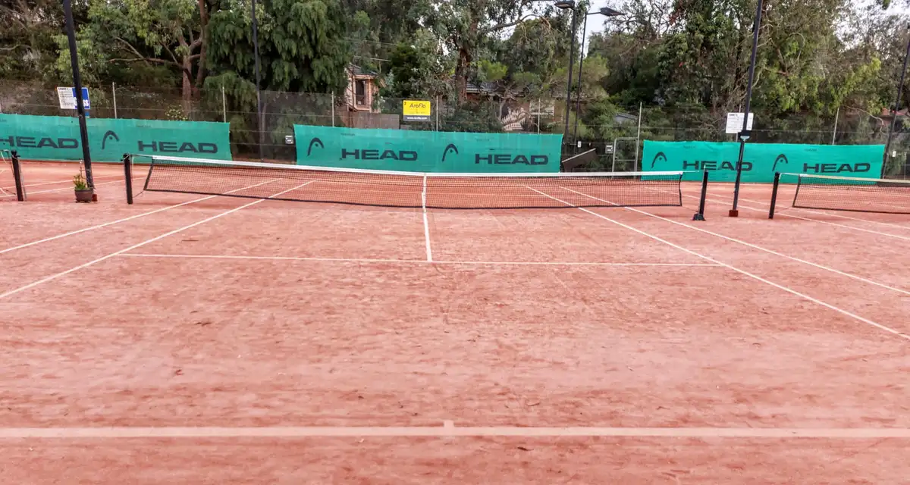

ATP · ATP 250
Almaty Open
 19–25 de octubre de 2026 · Almaty, Kazajistán · pista dura indoor
19–25 de octubre de 2026 · Almaty, Kazajistán · pista dura indoor
ATP 250 bajo techo en Almaty (Kazajistán).
Fuentes: ATP, ficha del Almaty Open · ATP, calendario 2026
Domingo, 18 de octubre de 2026 · Edición de hoy
ATP y WTA, con Alcaraz, Jódar y los españoles en primer plano. Resultados con fuente, rankings con fecha y explicaciones claras para que no se te escape nada del circuito.

Esta semana: Almaty, Bruselas y Lyon (ATP 250), y Ningbo y Osaka (WTA), del 19 al 25 de octubre. Después, Basilea y Viena (ATP 500), del 26 de octubre al 1 de noviembre, y el Rolex Paris Masters, del 2 al 8 de noviembre.
Davidovich Fokina, campeón en Shanghái. Remontó a Rafa Jódar 1-6, 7-6(5), 6-4 en una final española de Masters 1000.En directo
Marcadores en tiempo real de los partidos que se están jugando, vía SportScore.
Ahora mismo no hay partidos en pista.
Mientras tanto: Maja Chwalińska ganó a Sonay Kartal por 2-6, 6-4, 6-2 en la final de Wuhan. Esta semana, del 19 al 25 de octubre: Almaty, Bruselas, Lyon, Ningbo y Osaka. Próxima cita de equipo: Davis Cup Final 8, Bolonia, 24–29 de noviembre (España–Austria, cuartos el 26; final el 29). Australian Open 2027: Melbourne Park, 11–31 de enero; cuadro principal, 17–31 de enero.
Marcadores: Powered by SportScore.
Esta semana
Torneos ATP y WTA del 19 al 25 de octubre, con sede, superficie y quién juega. Las horas en Madrid, Buenos Aires y Ciudad de México, en cuanto cada torneo publique su orden de juego.
ATP · ATP 250
 19–25 de octubre de 2026 · Almaty, Kazajistán · pista dura indoor
19–25 de octubre de 2026 · Almaty, Kazajistán · pista dura indoor
ATP 250 bajo techo en Almaty (Kazajistán).
Fuentes: ATP, ficha del Almaty Open · ATP, calendario 2026
ATP · ATP 250
 19–25 de octubre de 2026 · Bruselas, Bélgica · pista dura indoor
19–25 de octubre de 2026 · Bruselas, Bélgica · pista dura indoor
ATP 250 bajo techo en el Brussels Expo. En el cuadro: Alejandro Davidovich Fokina, recién campeón en Shanghái, y Francisco Cerúndolo.
Fuentes: ATP, previa del European Open 2026 · ATP, ficha de Bruselas · ATP, calendario 2026
ATP · ATP 250
 19–25 de octubre de 2026 · Lyon, Francia · pista dura indoor
19–25 de octubre de 2026 · Lyon, Francia · pista dura indoor
ATP 250 bajo techo en el LDLC Arena. Nombres destacados de la previa ATP: Taylor Fritz, Flavio Cobolli, Tommy Paul, Ugo Humbert y Stan Wawrinka.
Fuentes: ATP, previa de Lyon 2026 · ATP, ficha de Lyon · ATP, calendario 2026
WTA · WTA 500
 19–25 de octubre de 2026 · Ningbo, China · pista dura
19–25 de octubre de 2026 · Ningbo, China · pista dura
WTA 500 en pista dura al aire libre, en el Ningbo Tennis Center.
Fuentes: WTA, ficha del Ningbo Open 2026 · WTA, calendario 2026 a 2 de octubre
WTA · WTA 250
 19–25 de octubre de 2026 · Osaka, Japón · pista dura
19–25 de octubre de 2026 · Osaka, Japón · pista dura
WTA 250 en pista dura al aire libre, en el Utsubo Tennis Center.
Fuentes: WTA, ficha del Japan Open 2026 · WTA, calendario 2026 a 2 de octubre
Noticias
Lo más importante del circuito, explicado en un minuto. Cada pieza lleva fecha, firma y fuente.
Final española de Masters 1000: Jódar ganó el primer set 6-1 y Alejandro Davidovich Fokina cerró por 7-6(5) y 6-4. Es su primer título de ese nivel.
Maja Chwalińska remontó el 18 de octubre ante Sonay Kartal por 2-6, 6-4 y 6-2 y ganó el Wuhan Open, su primer título WTA. La WTA la proyecta en el puesto 11.
Tras su primera final de Masters 1000, la PIF ATP Live Race sitúa a Rafael Jódar noveno, con 3.159 puntos. El ranking oficial del lunes 19 de octubre lo proyecta 11º; Alejandro Davidovich Fokina, 13º.
Alexander Zverev será el número 1 al cierre de 2026, el primer alemán en lograrlo. En la lista vigente del 12 de octubre, Sinner sigue primero con 11.000 puntos y Zverev segundo con 9.720.
Elena Rybakina lidera el ranking WTA a 12 de octubre de 2026, con 9.696 puntos, por delante de Aryna Sabalenka y Mirra Andreeva.
Jannik Sinner anunció el 6 de octubre que se trata la rodilla derecha y no volverá a competir en 2026. El número 1 vigente se queda fuera de las ATP Finals.
El 6 de octubre, Novak Djokovic ganó el China Open tras la retirada de Alex de Minaur (7-6(3), 0-1). Es el título 102 de su carrera, a los 39 años, y el séptimo en Pekín.
Rankings
Top 5 del ranking oficial a 12 de octubre de 2026.
| Puesto | Jugador | Puntos |
|---|---|---|
| 1 | Jannik Sinner | 11.000 |
| 2 | Alexander Zverev | 9.720 |
| 3 | Carlos Alcaraz | 5.560 |
| 4 | Ben Shelton | 4.680 |
| 5 | Félix Auger-Aliassime | 3.890 |
| Puesto | Jugadora | Puntos |
|---|---|---|
| 1 | Elena Rybakina | 9.696 |
| 2 | Aryna Sabalenka | 7.550 |
| 3 | Mirra Andreeva | 6.371 |
| 4 | Jessica Pegula | 6.225 |
| 5 | Coco Gauff | 5.974 |
Ranking oficial a 12 de octubre de 2026. Fuentes: ATP Tour y WTA. Top 20 ATP y WTA · Race a Turín · Jugadores en español · Cómo funciona el ranking ATP · y el WTA.
Calendario
La Copa Davis cierra 2026 en Bolonia. El primer Grand Slam de 2027 es el Australian Open, en Melbourne Park.
Noviembre 2026
Bolonia · 24–29 de noviembre de 2026. España juega los cuartos ante Austria el 26 de noviembre. La final es el 29 de noviembre.
Enero 2027
Melbourne Park · 11–31 de enero de 2027. El cuadro principal se juega del 17 al 31 de enero. El primer grande del año, en pleno verano austral.
Fuentes: Davis Cup, entradas del Final 8, sede en Bolonia, España–Austria y Australian Open. Calendario 2027.
Aprende tenis
Cuatro torneos, cuatro superficies, cuatro maneras de jugar. Lo básico para seguir la temporada desde el primer día. La guía completa · Aprende tenis · Reglas del marcador.
 Pista dura
Pista dura
Melbourne · Enero. El primer grande del año, en pleno verano austral. Pista dura y rápida, y mucho calor: aquí se ve quién ha hecho bien la pretemporada.
 Tierra batida
Tierra batida
París · Mayo–junio. La tierra batida de París: puntos largos, deslizamientos y resistencia. El territorio donde el tenis español ha escrito su historia.
 Hierba
Hierba
Londres · Junio–julio. El torneo más tradicional: hierba, vestimenta blanca y el saque como arma principal.
 Pista dura
Pista dura
Nueva York · Agosto–septiembre. El último grande del año: pista dura, ruido y las sesiones nocturnas de la Arthur Ashe, la pista de tenis más grande del mundo.
Glosario
¿Vienes del pádel o acabas de engancharte? Estas son las palabras que vas a oír en cada retransmisión. Glosario completo.
La ATP organiza el circuito profesional masculino y la WTA el femenino. De ahí salen los rankings y el calendario.
El escalón justo por debajo de un Grand Slam en la ATP. El campeón suma 1.000 puntos y el cuadro reúne a casi todo el top.
Torneos del mismo circuito, con menos puntos: 500 o 250 para el campeón. Sirven para sumar en el ranking y para ver a jugadores que luego llegan a los grandes.
El circuito de paso hacia la ATP. Ahí se ganan los primeros puntos y se entra en los cuadros grandes.
La clasificación que solo cuenta los puntos de este año y decide las ATP Finals de Turín. La lista vigente está en la Race a Turín.
La lista oficial de puntos de las últimas 52 semanas. En AceArena el top 5 lleva la fecha de la lista y el enlace a ATP o WTA.
Break es ganar el juego al saque del rival. Hold es conservar el tuyo. El partido suele girar ahí.
El juego de desempate, normalmente a 7 puntos con diferencia de 2, cuando el set llega a 6-6.
A 40-40 (deuce) el siguiente punto da la ventaja. Hay que ganar dos puntos seguidos para llevarse el juego.
La fase de clasificación. Quien la supera entra en el cuadro principal.
Alguien que cae en la qualy y aun así entra en el cuadro principal porque se abre un hueco.
Una invitación directa al cuadro. Los torneos se la dan a un local, a una promesa o a un regreso.
Un set ganado por 6-0.
Sobre AceArena
AceArena es un medio digital independiente de tenis en español, nacido en 2026. Contamos el circuito ATP y WTA con datos verificables: cada resultado lleva su fuente y cada ranking su fecha. Escribimos para quien sigue cada punto y para quien acaba de descubrir este deporte.
AceArena lo fundó Angel Cebria Morales. La página completa, con la política de correcciones y la de contenido patrocinado, está en Sobre AceArena.
Fuentes oficiales (ATP, WTA, torneos) y marcadores en vivo de SportScore. El contenido patrocinado siempre va señalado. ¿Ves un error? Escríbenos a hola@acearena.io y lo corregimos con la fecha de la corrección.
El resumen del lunes, en 3 minutos
Quiero el resumen